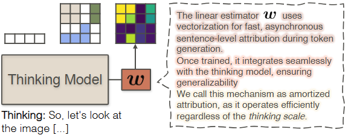
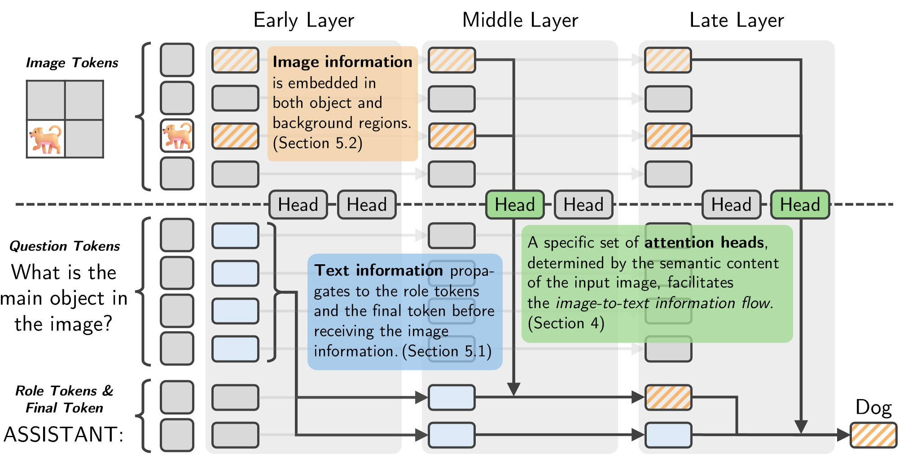
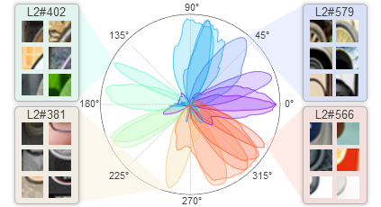
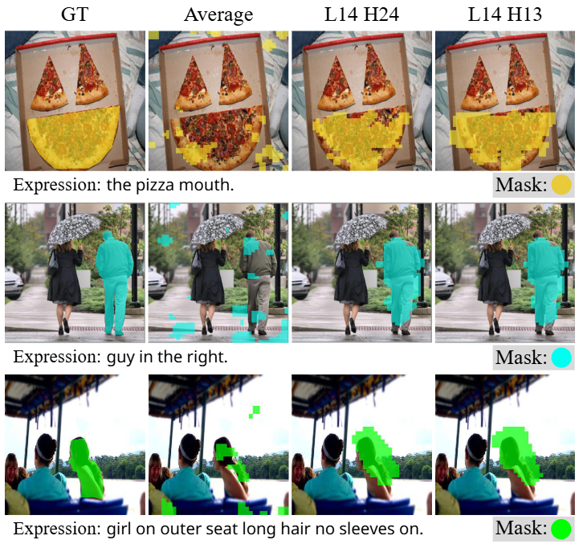
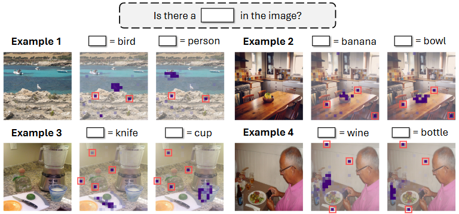
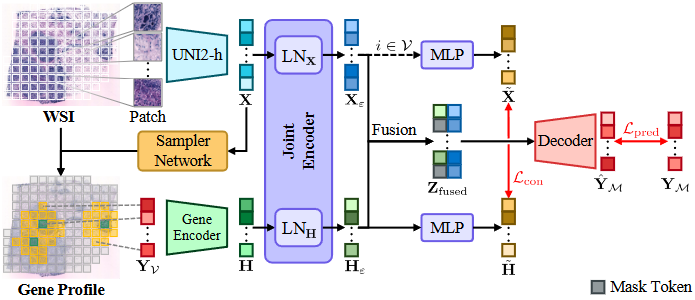
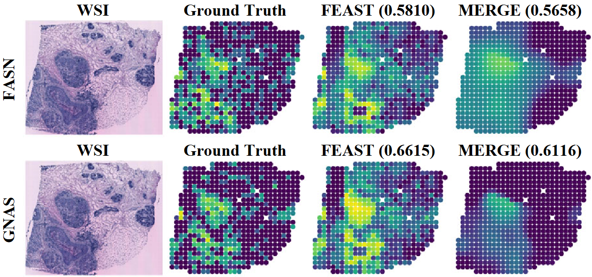
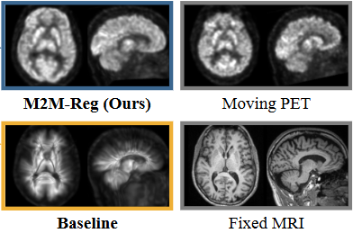
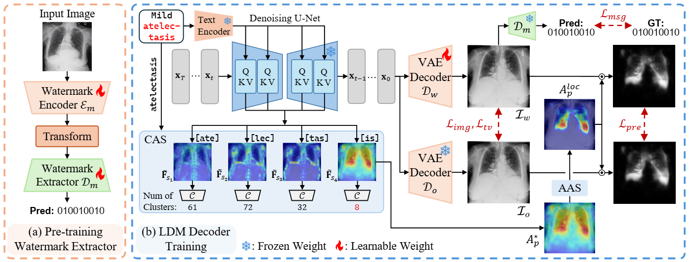

|
Jinyeong Kim
Hi, I'm an undergraduate student at Yonsei University, majoring in Medicine and AI. I am currently an intern at MICV Lab (Prof. Seong Jae Hwang) and INT-RO Lab (Prof. Sangjoon Park). My research interests include interpretability, clinical applications of AI, and multimodal models.
Email /
CV /
Scholar /
LinkedIn /
Github
|
|
Publications
Interpretability
|

|
Real-Time Visual Attribution Streaming in Thinking Model
Seil Kang, Woojung Han, Junhyeok Kim, Jinyeong Kim, Youngeun Kim, Seong Jae Hwang
ICML, 2026 (Spotlight, < 2.2%)
ICML SCALE Workshop, 2026 (Oral, Top 6 Papers)
An amortized framework for real-time visual attribution-based explanation in multimodal thinking models.
|
|

|
Interpreting Attention Heads for Image-to-Text Information Flow in Large Vision-Language Models
Jinyeong Kim,
Seil Kang,
Jiwoo Park,
Junhyeok Kim,
Seong Jae Hwang
NeurIPS Mechanistic Interpretability Workshop, 2025 (Spotlight, < 13%)
The image-to-text transfer in LVLMs depends on specialized attention head groups that are determined by the semantic content of the image.
|
|

|
Interpreting vision transformers via residual replacement model
Jinyeong Kim*,
Junhyeok Kim*,
Yumin Shim,
Joohyeok Kim,
Sunyoung Jung,
Seong Jae Hwang
NeurIPS, 2025
Residual replacement model explains end-to-end decision-making process of vision transformers in human-understandable scale.
|
|

|
Your Large Vision-Language Model Only Needs A Few Attention Heads For Visual Grounding
Seil Kang,
Jinyeong Kim,
Junhyeok Kim,
Seong Jae Hwang
CVPR, 2025 (Highlight, < 3.7%)
A few attention heads in frozen LVLMs demonstrate strong visual grounding capabilities. These "localization heads" immediately enable training-free detection and segmentation.
|
|

|
See What You Are Told: Visual Attention Sink in Large Multimodal Models
Seil Kang*,
Jinyeong Kim*,
Junhyeok Kim,
Seong Jae Hwang
ICLR, 2025
Large multimodal models consistently see irrelevant parts of the input. Our work demystifies this phenomenon, dubbed "visual attention sink," and proposes a simple mitigation strategy.
|
Medical AI
|

|
Contrastive and Adaptive Multi-modal Masked Autoencoder for Spatial Transcriptomics
Joohyeok Kim, Taejin Jeong, Jinyeong Kim, Seong Jae Hwang
MICCAI, 2026
MAE-based approach for spatial transcriptomics analysis is effective for spatial imputation problem.
|
|

|
FEAST: Fully Connected Expressive Attention for Spatial Transcriptomics
Taejin Jeong, Joohyeok Kim, Jinyeong Kim, Chanyoung Kim, Seong Jae Hwang
CVPR, 2026
Attention-based modeling drives notable improvements in spatial transcriptomics prediction, with enhanced interpretability.
|
|

|
Mono-Modalizing Extremely Heterogeneous Multi-Modal Medical Image Registration
Kyobin Choo,
Hyunkyung Han,
Jinyeong Kim,
Chanyong Yoon,
Seong Jae Hwang
MICCAI, 2025
Our cyclic framework solves the registration problem under extremely heterogeneous conditions.
|
|

|
Pathology-Aware Adaptive Watermarking for Text-Driven Medical Image Synthesis
Chanyoung Kim*,
Dayun Ju*,
Jinyeong Kim,
Woojung Han,
Roberto Alcover-Couso,
Seong Jae Hwang
MICCAI, 2025 (Early Accept, < 9%)
First-ever watermarking method specifically designed for text-driven medical image synthesis.
|
|
{kind=link}